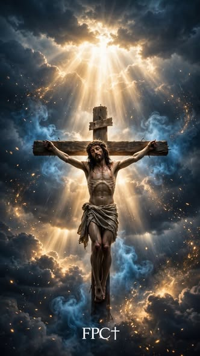

20 de outubro de 2026
Bem-vindos ao nosso site
Este é o espaço do Grupo dos Vocacionados do Senhor, da Paróquia Nossa Senhora da Paz.
Ler mais →
«Eis-me aqui, envia-me.» Is 6,8
Encontros
De cada mês, após a primeira missa.
Paróquia Nossa Senhora da Paz.
Notícias
20 de outubro de 2026
Este é o espaço do Grupo dos Vocacionados do Senhor, da Paróquia Nossa Senhora da Paz.
Ler mais →